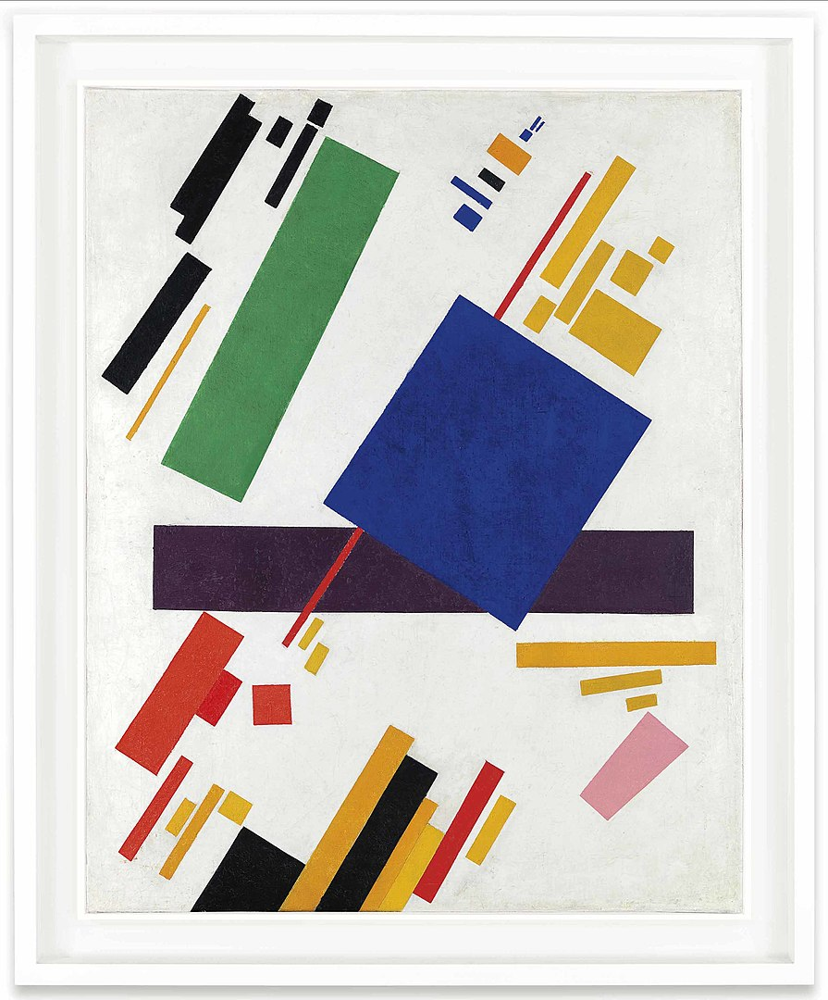
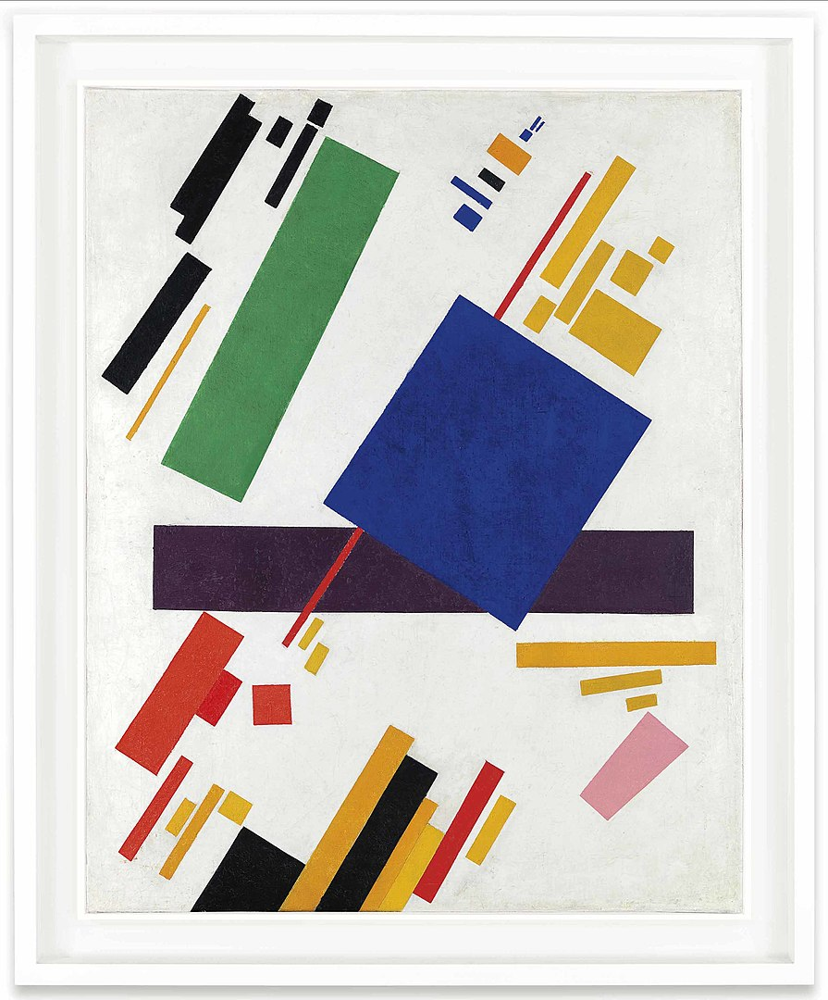
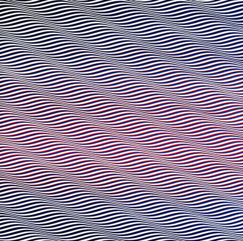
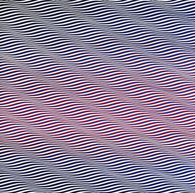

Programmierung von visuellen und interaktiven Medien
Einführung in grundlegende Konzepte der Programmierung mit p5.js

p5.js is a JavaScript library for creative coding, with a focus on making coding accessible and inclusive for artists, designers, educators, beginners, and anyone else! p5.js is free and open-source because we believe software, and the tools to learn it, should be accessible to everyone.
Using the metaphor of a sketch, p5.js has a full set of drawing functionality.
However, you’re not limited to your drawing canvas. You can think of your whole browser page as your sketch,
including HTML5 objects for text, input, video, webcam, and sound.
(p5.js)
JavaScript is the world's most popular programming language, [...] the programming language of the Web, [and] easy to learn.
(W3Schools)
Creative coding is a type of computer programming in which the goal is to create something expressive instead of something functional.
(Wikipedia)
Code Editor
Code Editor öffnenFunktionen
A function is a set of statements that perform a task.
Optionally, functions can have parameters.
(p5.js)
Mathematik
$\displaystyle{ f(x) = x^2 }$
JavaScript
p5.js
Übung: Konstruktivismus
Der Konstruktivismus ist eine streng gegenstandslose Stilrichtung der Moderne in der ersten Hälfte des 20. Jahrhunderts. [...]
Charakteristisch ist ein einfaches geometrisches Formenvokabular,
wie auf dem berühmten Bild Schwarzes Quadrat auf weißem Grund von Kasimir Malewitsch.
(Wikipedia)
 

Welche Funktionen brauchen wir?
Code:
Variablen
Bedingte Anweisung
Übung: Interaktive Kunst
Interaktive Kunst ist eine Form der Kunst, bei es zu einer Wechselwirkung zwischen dem Betrachter und dem Kunstwerk kommt.
In der Regel handelt es sich um computergestützte Arbeiten,
die eine dialogartige Situation zwischen Werk und Betrachter herstellen.
(Wikipedia)
Code:
Schleifen
Loops are handy, if you want to run the same code over and over again,
each time with a different value.
(W3Schools)
Mathematik
$\displaystyle{ 1 + 2 + 3 + 4 + 5 = \sum_{i = 1}^{5}i }$
JavaScript
Übung: Op-Art
Die Op-Art oder optische Kunst ist eine Stilrichtung der bildenden Kunst der 1960er Jahre,
die mit Hilfe präziser abstrakter Formmuster und geometrischer Farbfiguren beim Betrachter überraschende oder irritierende optische Effekte,
die Vorstellung von Bewegung, Flimmereffekte und optische Täuschungen erzeugt.
(Wikipedia)
 
